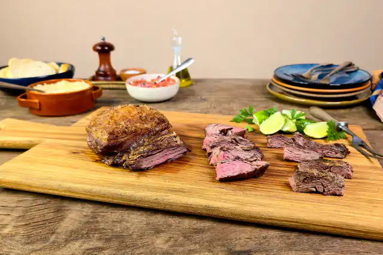

Home
Fraldinha

FRALDINHA ASSADA NA AIR FRYER
Fraldinha douradinha e suculenta em 20 minutos sem usar assadeira nem grelha da churrasqueira. Não tem truque nem segredo. É só temperar e mandar para o cesto da Air Fryer. Dá até tempo de arrasar nos acompanhamentos.
Ingredientes
- 1 fraldinha em peça (cerca de 1 kg)
- 1 colher (sopa) de sal grosso
- 1 colher (sopa) de azeite
- pimenta-do-reino moída na hora a gosto
Modo de Preparo
- Retire a fraldinha da geladeira 20 minutos antes do preparo — assim ela fica mais tostadinha, saborosa e no ponto certo depois de assada.
- Preaqueça a Air Fryer de 5 litros da linha Electrolux por Rita Lobo a 200 ºC e programe para assar por 20 minutos.
- Numa tigela grande, coloque a peça de fraldinha e tempere com o sal grosso, o azeite e pimenta-do-reino a gosto. Misture bem com as mãos para envolver toda a superfície da carne com o azeite e o sal.
- Dobre a parte mais fina da carne para baixo da peça e coloque a fraldinha no cesto da Air Fryer com a gordura para cima — assim a gordura derrete e a carne não resseca durante o preparo.
- Após 15 minutos, abra o cesto da Air Fryer e, com uma pinça, desdobre a ponta da fraldinha; deixe a peça aberta no cesto e ainda com a gordura para cima — a carne vai retrair e diminuir de volume. Deixe assar por mais 5 minutos, até que a carne fique dourada e no ponto (a ponta da fraldinha fica completamente assada mas ainda suculenta, e a parte mais alta da peça conserva o centro rosado).
- Transfira a fraldinha para a tábua e deixe a carne descansar por 5 minutos antes de fatiar — nesse tempo, os sucos da carne se redistribuem, o que garante um assado mais suculento e saboroso.
- Na hora de servir: corte a parte mais fina da peça de fraldinha em 3 pedaços, no sentido da largura, e fatie cada pedaço no sentido do comprimento. Já a parte mais grossa (com a gordura), corte ao meio no sentido do comprimento e corte cada metade em fatias.